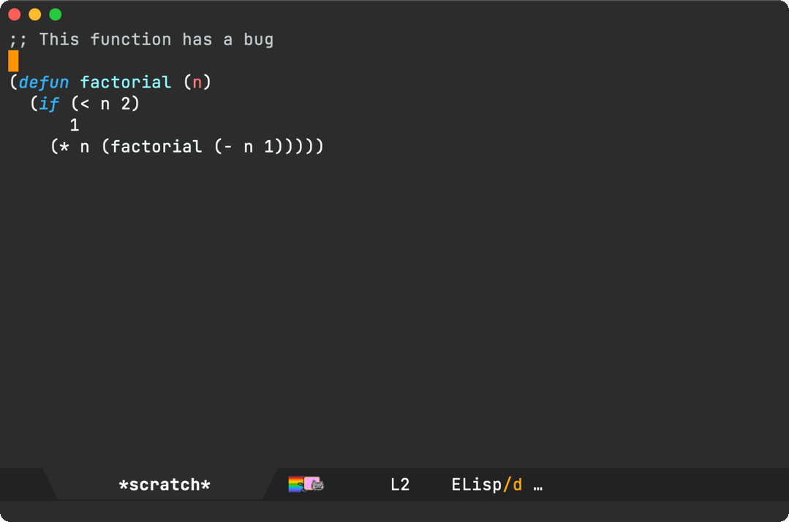
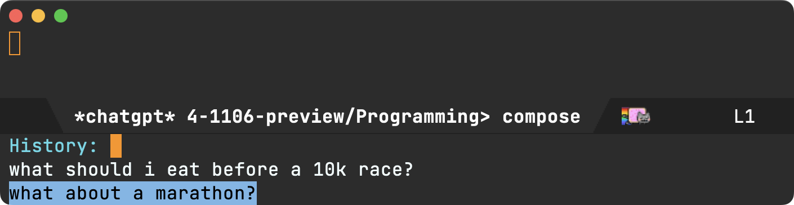
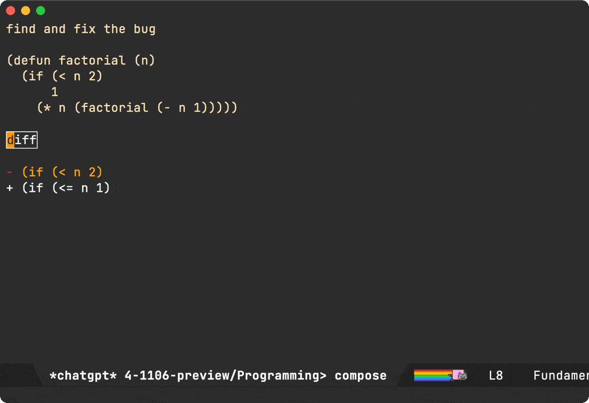

Álvaro Ramírez
A chatgpt-shell compose ux experiment
It's been roughly 9 months since I experimented with wiring the ChatGPT API to an Emacs comint buffer in chatgpt-shell. ChatGPT's request-response nature maps fairly well to a shell's mode of interaction.
In the past, I've also talked about blurring the lines between shell and editor. That is, using Emacs as your shell (eshell being my favourite) enables compounding goodies from both shell and editor when both are used from the same app.
Keeping interactions within the same app also cuts down on some of that friction that comes with context switching between your text editor and the browser for llm things.
Today, my interactions with llms typically consists of copying and pasting details from other Emacs buffers, crafting a query, and finally submitting by pressing enter (RET) from a shell like chatgpt-shell.

With the entire interaction happening from Emacs, we're already cutting a fair amount of friction… But we can do better, specially when copying, pasting, and crafting those multi-line queries (you don't want to prematurely submit those shell queries by inadvertently pressing RET when you want a newline).
chatgpt-shell-prompt-compose
This is where chatgpt-shell-prompt-compose comes in, an opinionated experiment bringing some of my favourite "compose" features over from the likes of magit commit buffers, org capture, mu4e compose, and so on…
You can bring a compose buffer up by invoking M-x chatgpt-shell-prompt-compose. From there, you can both craft and send your queries. If you're a magit fan, the process should feel fairly familiar with crafting a git commit message by editing away and quickly committing (via C-c C-c binding). Similarly, you can also abort with the familiar C-c C-k binding.

I use this compose utility often enough that I bound it to C-c C-e, though this may not be your cup of tea (needs overriding other mode maps).
(use-package chatgpt-shell :commands (chatgpt-shell chatgpt-shell-prompt-compose) :bind (("C-c C-e" . chatgpt-shell-prompt-compose) :map org-mode-map ("C-c C-e" . chatgpt-shell-prompt-compose) :map eshell-mode-map ("C-c C-e" . chatgpt-shell-prompt-compose) :map mu4e-compose-mode-map ("C-c C-e" . chatgpt-shell-prompt-compose) :map emacs-lisp-mode-map ("C-c C-e" . chatgpt-shell-prompt-compose)))
While the compose buffer displays a single query/response at a time, it also follows on from previous requests. You can press r to reply and continue the conversation.

The compose buffer is fairly stateless and mostly serves as viewport over the last query in the shell itself. If you invoke chatgpt-shell-prompt-compose with a prefix (ie. C-u), it wipes the shell history. You can do it from the compose buffer itself, if you forgot to prior to launching.
You can also use the o binding to jump to the "other buffer" (the shell carrying the conversation history).

If using the r and o bindings in a compose buffer sounds a little strange, fear not. The compose buffer is writeable while crafting queries, thus you can safely insert any character. Once a query is submitted (via C-c C-c), the buffer automatically becomes read-only, and thus unlocking single-character bindings.
Another magit commit favorite of mine is using the M-p or M-n bindings to insert previous messages via git-commit-prev-message or git-commit-next-message.
With that in mind, I also brought M-p and M-n over to the editable compose buffer.

If cycling isn't efficient enough, you can also use the typical M-r binding to search and insert from history.

Now, getting back to removing some of that copy-pasting friction… Selecting text in any buffer and invoking M-x chatgpt-shell-prompt-compose (or C-c C-e in my case) automatically pastes the region into the compose buffer. You get to tweak your query before submitting (via that familiar C-c C-c), in a more flexible buffer (compared to a shell).
Note: You can also invoke the compose command with a region as many times as you'd like. Each region is sent to the compose buffer, so you can craft more involved queries before submission.

While I typically prefer short query responses (using diffs like the example above), I sometimes want full snippets as follow-ups. I found myself typing "show entire snippet" often enough, that I now use one of those single-character bindings (e) for this purpose.

Compose bindings
I've showcased most of the compose key bindings, here's the whole lot (so far anyway), which you can also view from chatgpt-shell-prompt-compose's documentation.
Editing
C-c C-cto send the buffer query.C-c C-kto cancel compose buffer.M-rsearch through history.M-pcycle through previous item in history.M-ncycle through next item in history.
Read-only
C-c C-cAfter sending offers to abort query in-progress.qExits the read-only buffer.gRefresh (re-send the query). Useful to retry on disconnects.nJump to next source block.pJump to next previous block.rReply to follow-up with additional questions.eSend "Show entire snippet" query.oJump to other buffer (ie. the shell itself).C-M-hMark block at point.
Buyer beware: it's all pretty experimental
When I started playing with the compose buffer idea, I wasn't too sure whether or not its usage would stick, so I basically hacked chatgpt-shell-prompt-compose to pieces. A cheap prototype of sorts to validate the idea before fully committing to a more involved solution.
I'll eventually rewrite chatgpt-shell-prompt-compose as either a major or minor mode if there's enough interest.
For now, I'll continue using as is to validate its usefulness.
If you give chatgpt-shell-prompt-compose a try, I'd love to hear your feedback (Mastodon / Twitter / Reddit / Email).
Enjoying this content? Find it useful? Consider sponsoring.